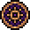
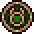

Days
The World is flat and has six days:
| Name | Symbol | Symbol's Meaning | Associated Day | Effect |
|---|---|---|---|---|
| Pride |  |
The Sun | Sunday
Sun's Day |
Bishop visits the Church or The Graveyard. If you have the Preacher Perk you can give a sermon on this day. |
| Lust | Venus
Freyja (Norse Goddess) |
Friday
Freyja's Day |
Ms. Charm visits The Dead Horse | |
| Gluttony | Jupiter
Thor (Norse God) |
Thursday
Thor's Day |
Merchant visits The Village | |
| Envy |  |
Mercury
Odin (Norse God) |
Wednesday
Woden's Day
|
Snake visits the Old Church Cellar but he can be found there any day and after his quest begins remains there (not when waiting for the Damask Sword or decorating). |
| Wrath | Mars
Tyr (Norse God) |
Tuesday
Tyr's Day |
Inquisitor visits Witch Hill. | |
| Sloth | The Moon | Monday
Moon's Day |
Astrologer can be found by the Lighthouse at Sealight. |


In the game files, the days are named after the Seven Deadly Sins. The symbol of each day is based on an astrological symbol associated with a celestial body and a real-life day of the week.
There are only six days present in the game, with Greed/Saturn/Saturday notably missing. It should also be noted that the sequence of days compared to real life is reversed.
Days are 7 minutes and 30 seconds long resulting in a 45 minute week.
According to Norse Mythology, Odin (may have been)/(is) Woden.